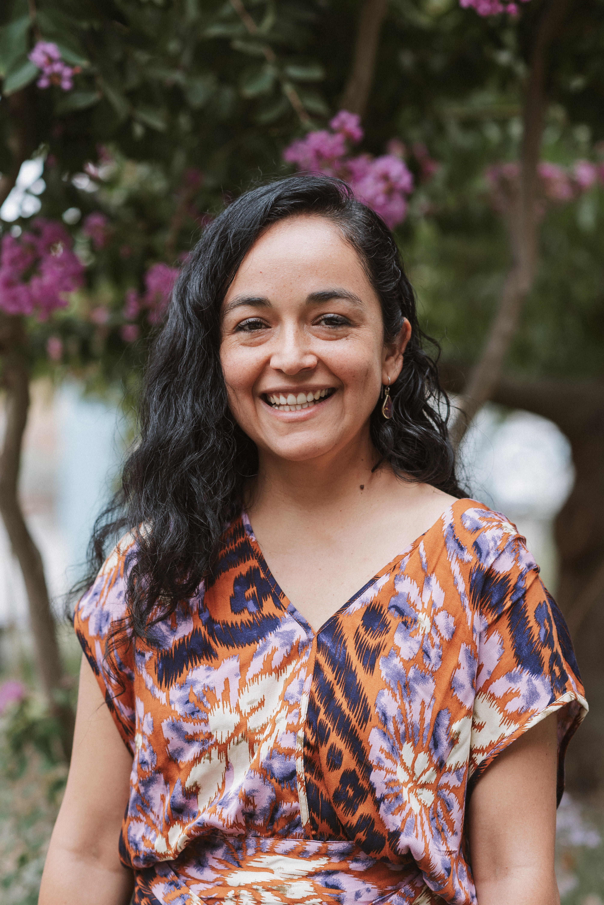
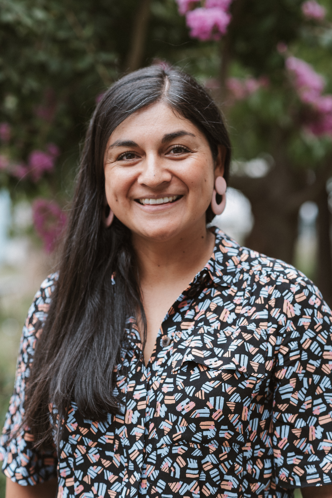
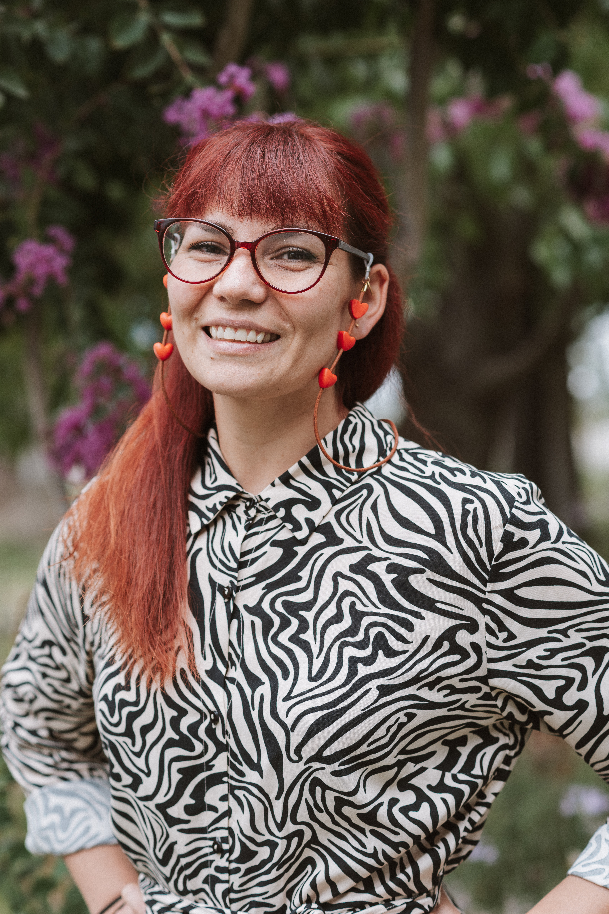

Isabel Contreras Barrios
Dirección y mediación
01 / Quiénes somos
Nacimos en Rancagua en 2023 para poner libros justo donde la gente vive, espera y se encuentra.
Creemos en la cultura comunitaria como una herramienta concreta de afecto, memoria y salud emocional.
02 / Nuestro trabajo
Del acceso a la conversación. De la conversación al aprendizaje colectivo.
03 / El equipo

Dirección y mediación

Gestión comunitaria

Educación y territorio
Retratos del equipo de Fundación Cultural Parada Literaria
04 / Participa
Dona libros en buen estado. Nosotros hacemos que lleguen a nuevas manos en la Región de O’Higgins.
Libros donde la vida sucede.
Acercamos la lectura a los espacios cotidianos para que encontrar un libro no sea un privilegio, sino una posibilidad real.
 Parada Literaria · Territorio y comunidad
Parada Literaria · Territorio y comunidad
Lo que hacemos
Módulos de libre acceso en siete centros de salud de la región.
Ejemplares que encuentran nuevos hogares y acompañan nuevas historias.
Una red ciudadana para recibir, cuidar y volver a poner libros en circulación.
Libros que ya están circulando
Con el respaldo del Ministerio de las Culturas, las Artes y el Patrimonio.
Historias que nos reúnen.
Creamos experiencias sensibles que conectan los libros con la memoria, el juego y los saberes de cada comunidad.
 Parada Literaria · Territorio y comunidad
Parada Literaria · Territorio y comunidad
Lo que hacemos
Relatos compartidos para escuchar, imaginar y conversar en comunidad.
Piezas hechas a mano que convierten cada historia en una experiencia visual y táctil.
Proyecto textil comunitario donde las manos también escriben patrimonio.
Conocimiento que circula.
Compartimos herramientas para que más personas puedan acompañar lecturas con sentido, cuidado y pertinencia territorial.
 Parada Literaria · Territorio y comunidad
Parada Literaria · Territorio y comunidad
Lo que hacemos
Un espacio regional para pensar la literatura infantil y juvenil.
Encuentros con autoras, especialistas y voces vinculadas a la lectura.
Formación práctica para educadoras rurales y equipos de salud.